인공지능프로그래밍 · 오늘 날씨 알리미
한 문장 개발
vs PRD + Todolist 개발
같은 앱을 AI에게 두 가지 방법으로 주문했다
MUNHO KANG
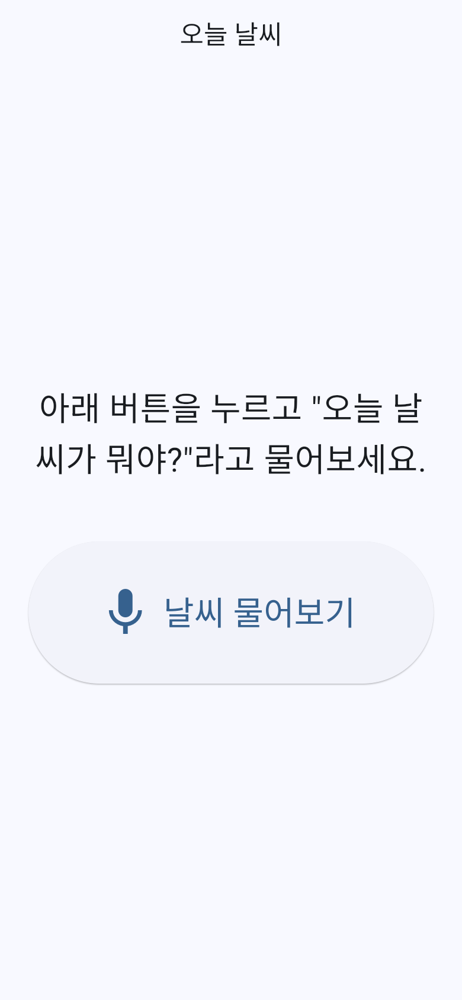
한 문장
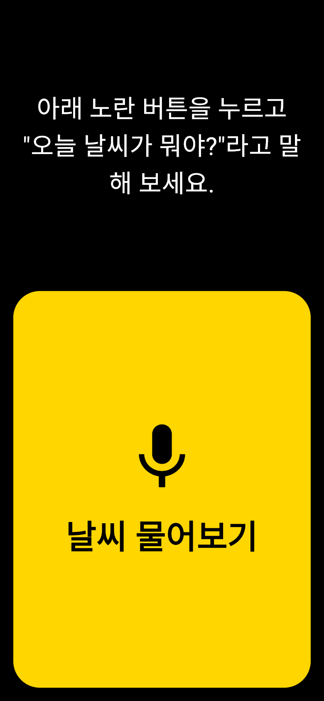
PRD + Todolist
AI에게 건넨 주문서
한 문장
“말로 물으면 오늘 날씨를
소리로 알려주는 앱”
소리로 알려주는 앱”
1 문장
누구를 위해? 어디까지? → 빈칸
PRD + Todolist
📄 PRD.md 123줄
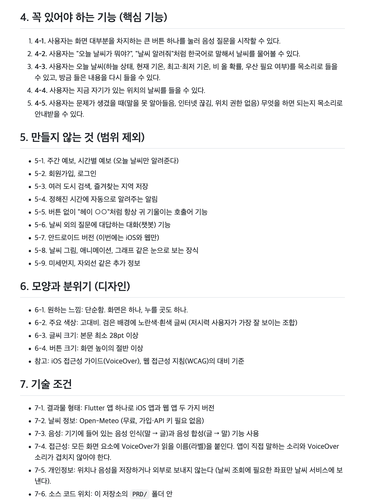
📋 Todolist.md 170줄 · 6단계
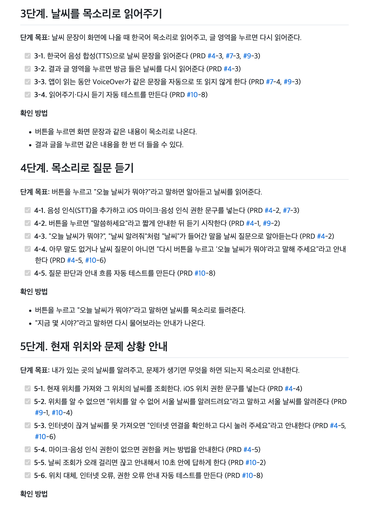
시각장애인이 쓸 수 있나? 접근성
🎨 색 대비
날씨 물어보기
날씨 물어보기
기본 테마 → 7:1 이상
👆 버튼 크기
14% → 60%
🔤 글씨 크기
가
가
28pt → 30pt 이상
🗣️ VoiceOver
❌ 이름표 없음
✅ “두 번 탭하면 질문을 듣기 시작합니다”
✅ 같은 말 두 번 안 읽음
화면 읽기 기능 대응
한 문장엔 “시각장애인”이 없었다 → AI는 보통 사람용 앱을 만들었다
숫자로 보는 차이 한 문장 PRD + Todolist
⏱️ 걸린 시간 2026-10-05 저녁
첫 화면
한 문장
버튼 ≈ 화면 14%
→
PRD + Todolist
버튼 = 화면 60%
검정 + 노랑 대비 7:1↑
날씨 답변
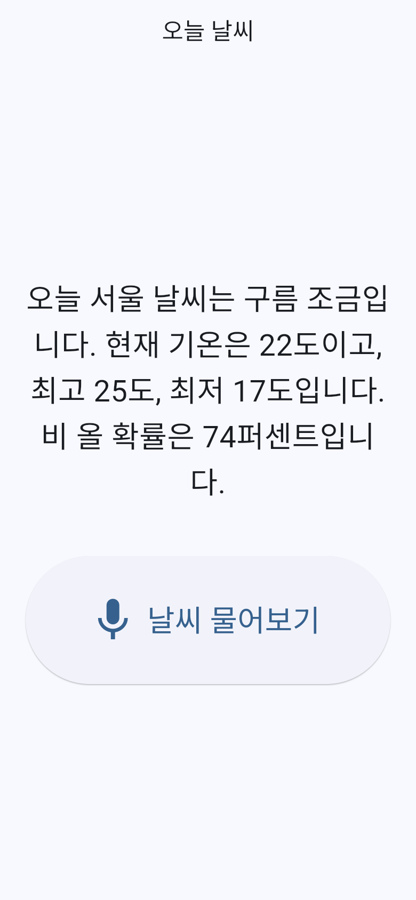
한 문장
“오늘 서울 날씨는 구름 조금… 비 올 확률은 74퍼센트입니다.”
📍 항상 서울 · ☂️ 74%인데 우산 얘기 없음 · 🔁 다시 듣기 없음
PRD + Todolist
“오늘 현재 위치 날씨는 맑음… 비 올 확률은 10퍼센트, 우산은 챙기지 않아도 돼요.”
📍 내 위치 · ☂️ 우산 안내 · 🔁 글자 누르면 다시 읽기
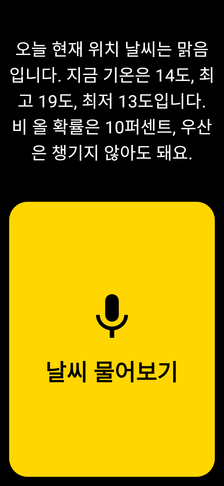
버튼을 누른 뒤 흐름
① 시작
② 누르면
③ 확인 중
④ 답변
⑤ 못 알아들음
한 문장
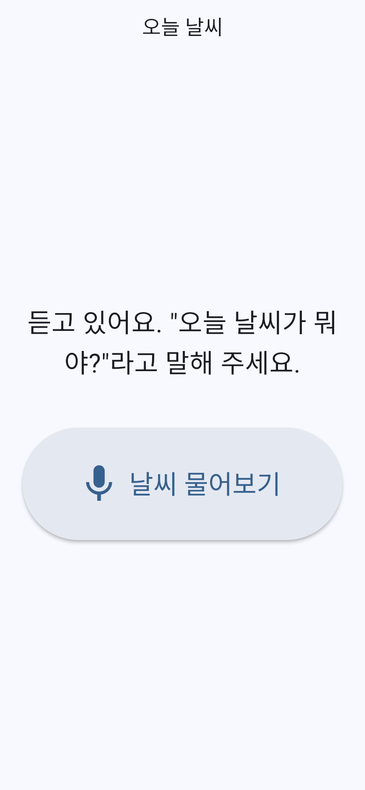
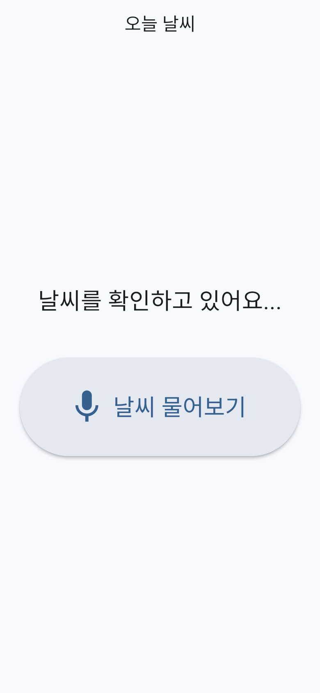
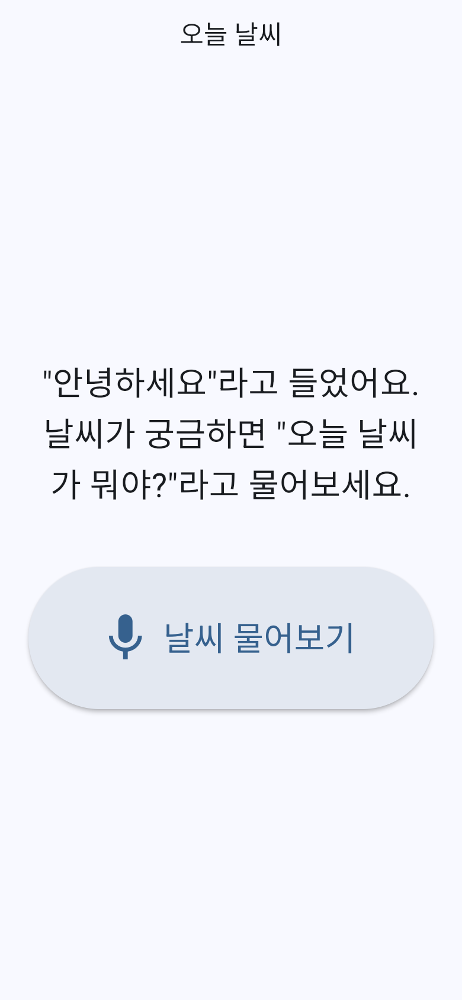
PRD
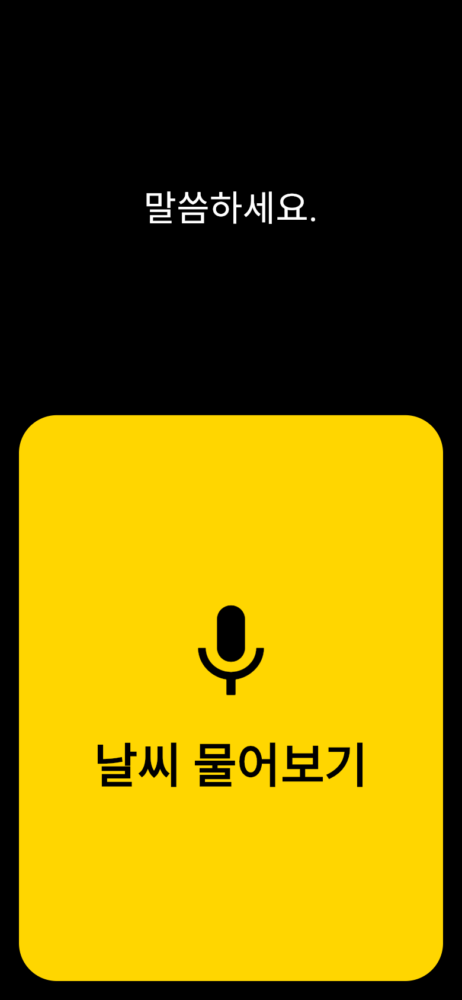
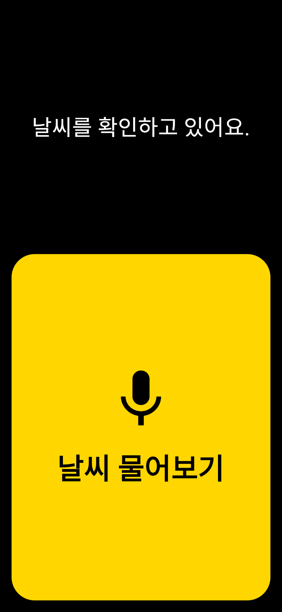
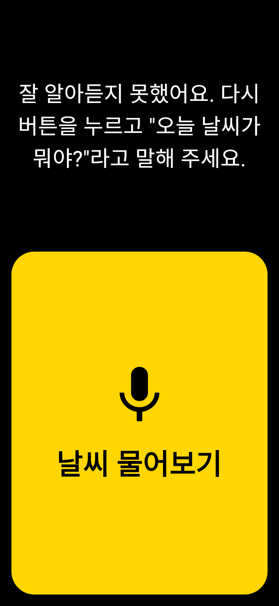
🔊 “말씀하세요”
⏱️ 약 9초 안에
☂️ 우산 + 🔁
🔊 다음 행동 안내
기능 비교
| 기능 | 한 문장 | PRD + Todolist |
|---|---|---|
| 🎙️ 목소리로 질문 | ✅ | ✅ |
| 🔊 소리로 답변 | ✅ | ✅ |
| 📍 어느 곳 날씨? | ❌ 서울 고정 | ✅ 현재 위치 |
| ☂️ 우산 안내 | ❌ | ✅ 비 확률 50%↑ |
| 🔁 다시 듣기 | ❌ | ✅ |
| 🗣️ “말씀하세요” 음성 안내 | ❌ 글자만 | ✅ |
| ⏱️ 응답 시간 보장 | ❌ | ✅ 약 9초 |
| 🌡️ 영하 기온 읽기 | “-3도” | “영하 3도” |
문제가 생겼을 때

한 문장: “다시 시도해 주세요.” 🤷
| 상황 | 한 문장 | PRD 🔊 |
|---|---|---|
| 🌐 인터넷 문제 | “다시 시도해 주세요.” | “인터넷 연결을 확인하고 다시 눌러 주세요.” |
| 🎙️ 마이크 권한 없음 | 말 없이 서울 날씨 | “설정 앱에서 마이크를 켠 뒤…” |
| 📍 위치를 모름 | (원래 서울만) | “위치를 알 수 없어 서울 날씨로 알려드려요.” |
| 🐢 인터넷 느림 | 계속 기다림 | 약 9초 안에 답 |
만드는 과정
한 문장
💬 주문
→
⌨️ 바로 코드
→
✔️ “돌아가면 완성”
PRD
📄 PRD
→
❓ 열린 질문 4개 결정
→
📋 6단계 할 일
→
🔁 단계마다 확인
→
🏁 완성 기준 8개 점검
점검에서 찾은 문제
11초
→
9초
기준 10초를 넘어서 고침
범위 지키기
🚫 9개
“만들지 않는 것”을 먼저 정함
왜 그렇게 만들었는지 거슬러 올라가기
💾 커밋 기록
feat(prd): 위치를 모르면
서울 날씨로 대신 안내 [5-2]
서울 날씨로 대신 안내 [5-2]
→
📋 Todolist
5-2 위치를 모르면 이유를 말하고 서울로 (PRD #9-1)
→
📄 PRD
9-1 위치를 알 수 없을 때 어디 날씨? → 서울로 대신
한 문장 방식: 커밋 메시지만 남음 · PRD 방식: 코드 → 할 일 → 이유까지 연결
정리
| 💬 한 문장 | 📄 PRD + Todolist | |
|---|---|---|
| 👍 장점 | ⚡ 빠르다 (21분) | 🎯 진짜 사용자에게 맞는 앱 |
| 👎 단점 | AI가 빈칸을 “보통”으로 채움 | ⏳ 문서 + 개발 시간 (약 87분) |
| 📦 결과물 | 작동하는 데모 | 쓸 수 있는 앱 |
| 🧭 어울리는 곳 | 아이디어 시험, 연습 | 실사용 앱, 과제, 팀 프로젝트 |
🍳
일단 먹을 수 있는 요리vs
🍱
먹을 사람 사정까지 생각한 상AI는
시킨 만큼 만든다
👤 누구를 위해
❓ 왜
📏 어디까지
작동하는 앱 → 쓸 수 있는 앱